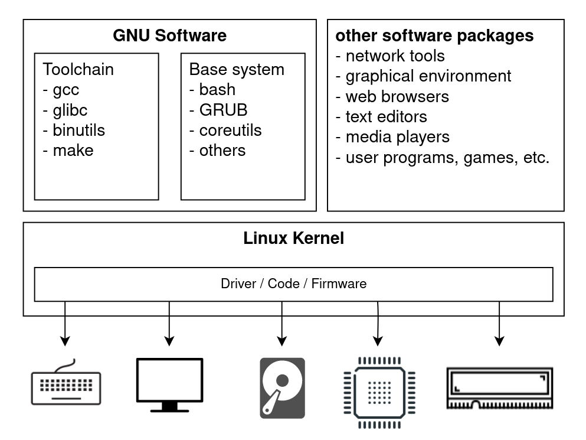
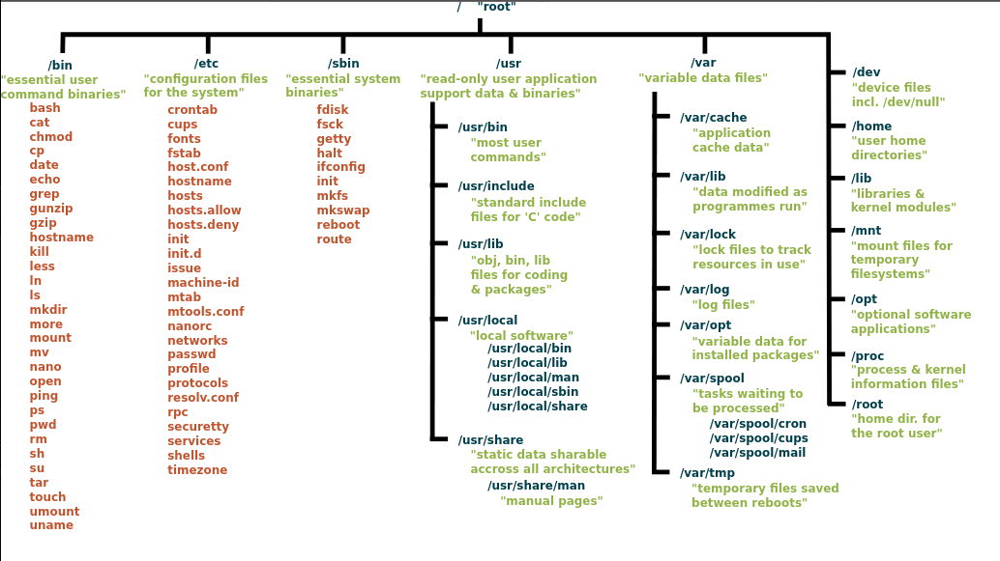

What is Linux?
Introduction
This article will include:
- Introduction to GNU and Linux
- Illustrations of Linux in a single diagram (main components)

Linux || GNU/Linux
An operating system (OS) is the software interface between a user and computer hardware. It is an abstraction layer that allows userspace programs (web browser, text editor, media player) to avoid worrying about interacting with hardware (keyboard, screen, CPU, RAM). The Linux kernel is mostly used in combination with the GNU operating system. Thus, the GNU/Linux operating system (OS) consists of the Linux kernel (the core of the operating system) and GNU software packages.
- The Linux kernel is the core of the operating system. It manages and allocates computer resources (CPU scheduling, memory management, process management, filesystem management, device management, networking, etc.)
-
GNU provides the rest of the operating system:
- Toolchain used for developing applications and operating systems, and compiling new source packages into binaries (gcc, glibc, binutils, make, ...). This includes the GNU Compiler Collection (gcc), the GNU C library (glibc), GNU Binutils (assembler for assembly programs, linker for object files, ...).
- Base system is a set of software packages used commonly in the GNU/Linux operating system. This includes bash (command shell program), GRUB (bootloader), coreutils (cd, cat, ls, rm, ...), and other utilities (tar, grep, sed, ...).
- And then there are other software packages, like web browsers and text editors. Perhaps surprising to some, this also includes your graphical user interface (GUI), which ultimately is just a set of packages. You can change your desktop environment/window manager easily in Linux!
Each distribution of GNU/Linux (Ubuntu, Debian, Fedora, Arch, etc.) is a bundle of packages that can be 'distributed' as an operating system, with slight differences in the kernel, GNU packages, and other software packages. To most users, the main difference will be the desktop environments and programs that are shipped with the distribution. This allows the different distributions to look so different.
"Everything in Linux is a file"
is probably the most important thing to keep in mind while continuing to read this article. *Almost* everything is a file, from the bootloader executable file, to the compressed kernel image, the files in the filesystem hierarchy, and the system manager and other software. This allows users/administrators to have a great degree of flexibility. Almost everything can be changed or added, simply by installing the desired software: bootloader, kernel (yes even the kernel!!), desktop environment, network manager, command shell, browser, and more.
When your system is powered off, the operating system has to reside somewhere... yes, it resides on your disk storage (SSD/HDD). The Linux operating system resides as a filesystem containing executable binary files, libraries, configuration files. During boot process, the kernel will mount this filesystem, execute the init process (AKA first process, ancestor of all processes, system manager), which will call init scripts and startup other services and processes. The operating system will be loaded bit by bit into RAM, and eventually 'userspace' is reached, and you can launch your user programs.
Linux in a single diagram - 4 main components
- Bootloader
- Kernel
- Filesystem hierarchy (directory structure and files)
- System manager and other packages
There are two images below. The first is from my article on the UEFI boot process, where I explain the steps of booting, from power on to system initialization. The boot process can be summarized as:
- Power on
- UEFI boot entry
- Bootloader
- Enter /boot
- Kernel
- Root filesystem mounting, initialization scripts, and system manager
Try and identify each step in the diagram below!

This next image presents the components of Linux in a single diagram. It provides an overview of how the bootloader, kernel, and filesystem interact. The system manager and user applications are just files - executables (in /bin), libraries (in /lib), configurations (in /etc) - "scattered" across the different directories in the filesystem.
Identify in the diagram each of the 4 main components of a Linux Operating System (OS):
- Bootloader
- Kernel
- Filesystem hierarchy
- System manager and user packages
1. Bootloader
During the boot process, the bootloader stored on a specific partition of storage disk is executed. The bootloader then loads the kernel into RAM, as part of the boot process described more in my article on the UEFI boot process.
2. Kernel
CPUs may operate in different modes, commonly two separate modes: kernel mode and user mode. These are protection modes with differing restrictions on the types of allowed operations. These CPU modes are commonly enforced at the hardware level.
The kernel is the core of the operating system, and operates in the privileged kernel mode, where it can perform unrestricted device/hardware management, hardware instructions and memory access.
User processes, on the other hand, operate in user mode. User processes may not be able to interact directly with hardware, have restricted hardware instructions, and may only access memory that is marked as being in user space.
As mentioned, kernel space sits between user space and the hardware. As such, user processes have to perform system calls - requests to the kernel to perform operations on their behalf - for certain operations such as read/write to file storage, or creating and communicating with other processes.
The kernel performs the central role in the operating system, of managing and allocating system resources. This includes scheduling processes for CPU execution; allocating physical memory and managing virtual memory for processes; managing filesystems; creating, executing and terminating processes; accessing hardware/devices; network communication; and providing a system call API for user processes. Perhaps I will write an article with illustrations on the kernel's role soon :)
3. Filesystem hierarchy
The image above is from Wikipedia - Unix Filesystem as of 21 July 2020. The Filesystem Hierarchy Standard by the Linux Foundation provides guidelines for filesystem structure. Most Linux distributions follow it, with some deviations, allowing files to be placed in a predictable location following the standard.
Each Linux distribution has their own package manager that makes it very easy to install, update, and remove packages. They also install/update/remove packages that are required by these packages (resolving dependencies).
This means that when installing a software package, its files will be 'scattered' across the filesystem hierarchy. It also means that if a user or program is searching for a configuration file (or other particular type of file), it will likely be located in a predictable directory.
| Directory | Purpose |
|---|---|
| /usr/bin | executable files |
| /etc | configuration files |
| /usr/lib | libraries |
| /usr/share/application_name | data files |
| /usr/share/man | manual pages |
4. System manager and User Packages
References
Final Notes
These guides are targeted mostly at newcomers to Linux. The extensive use of illustrations is something I find most other guides lack. I would appreciate any feedback, and corrections if I have made any mistakes. Apologies in advance if I have!
Email:
sky100aw@gmail.com